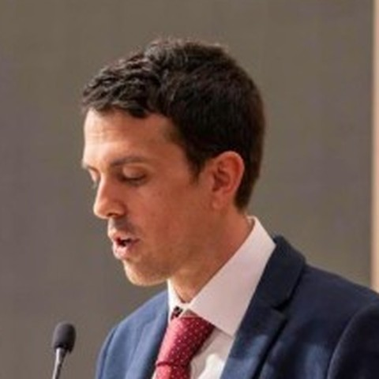
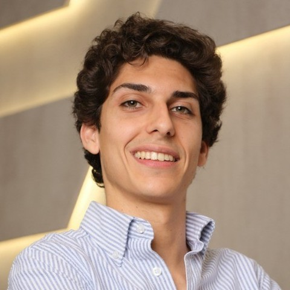

Antes de asesorar, hemos dirigido, vendido y construido.
Somos cinco socios. Juntamos la dirección de empresas, el producto y el software. Trabajas con nosotros directamente, de principio a fin, no con un equipo junior.
Los cinco socios
Joaquín
Empresa y estrategia
Lleva diez años dirigiendo un grupo educativo de Madrid con más de sesenta profesionales: estrategia, nuevas líneas de negocio, finanzas y equipos directivos. Ha automatizado procesos y ha puesto la IA en el trabajo diario de esa empresa.
Ingeniero químico por la Universidad de Oxford.

Juan
Alianzas y formación
Cofundador de un grupo educativo y de un colegio británico de bachillerato en Madrid, donde ha dirigido admisiones y alianzas con colegios. Ha dado buena parte de las formaciones en IA del grupo y ha implantado automatizaciones por departamentos, sobre todo en el área comercial.
Derecho y Ciencias Políticas (UAM y Sciences Po Bordeaux). Español, inglés y francés.

Jorge
Producto
Product owner sénior de software para el sector de las renovables, con foco en productos de IA y en medir si un sistema responde bien antes de ponerlo delante de un cliente. Antes dirigió una academia que pasó de 175 a más de 350 alumnos.
Ingeniero mecánico por la Universidad de Bath.
- [Foto]
Pedro
Software
Ingeniero de software sénior: aplicaciones web para empresas y la adopción de la IA en el día a día de un equipo técnico. Antes pasó tres años y medio en SMART Technologies, la empresa canadiense de pizarras interactivas.
Informático por la Universidad de Edimburgo. Español, inglés y alemán.
- [Foto]
Adrián
Estrategia y precios
Estrategia de precios y analítica en grandes multinacionales. En una de gran consumo de la lista Fortune 50 extendió a toda Europa un algoritmo que recortó un 75 % el coste de datos. Desde 2024 construye productos con IA por su cuenta.
Ingeniero industrial, con un máster en economía internacional.
¿Qué tarea se lleva más horas de las que debería?
Cuéntanoslo en una llamada de 30 minutos, sin coste ni compromiso. Te decimos por dónde empezaríamos, o si no lo vemos claro.